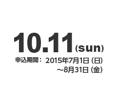
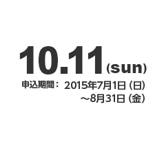
開催まであと75日
墨田区マラソンは，「走る人」、「応援する人」、「支える人」みんなが主役の大会です。そこで、ランナー受付準備、ランナー受付、ランナーへの給水・給食、コース（沿道）の整理など、一緒に大会に参加していただくスタッフを募集します。
詳細はこちらから- 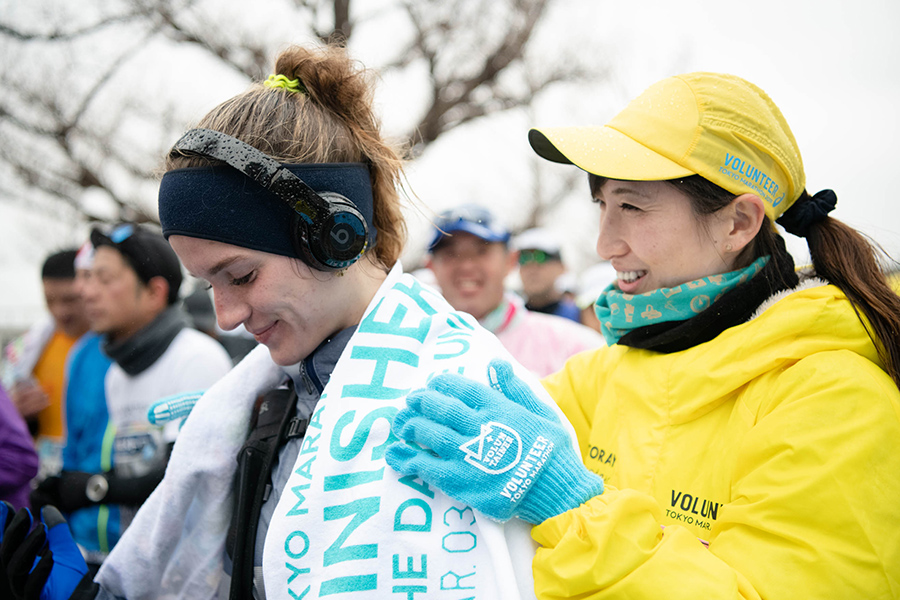
- 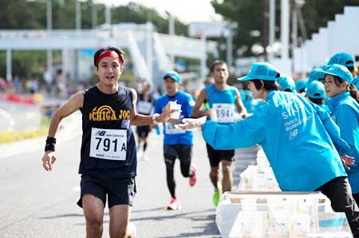
- 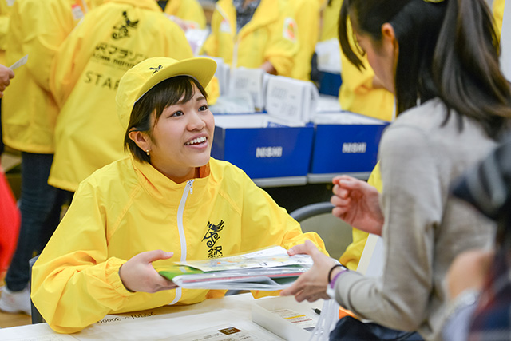
墨田区マラソンは，「走る人」、「応援する人」、「支える人」みんなが主役の大会です。そこで、ランナー受付準備、ランナー受付、ランナーへの給水・給食、コース（沿道）の整理など、一緒に大会に参加していただくスタッフを募集します。
墨田区市スポーツ振興サポートランナー
ならまだ走れます。
12月1日（火）まで
詳細はこちらから墨田区マラソンは，「走る人」、「応援する人」、「支える人」みんなが主役の大会です。そこで、ランナー受付準備、ランナー受付、ランナーへの給水・給食、コース（沿道）の整理など、一緒に大会に参加していただくスタッフを募集します。
- 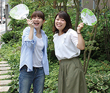
- 沿道で応援します！
ちさと&まなみさん - 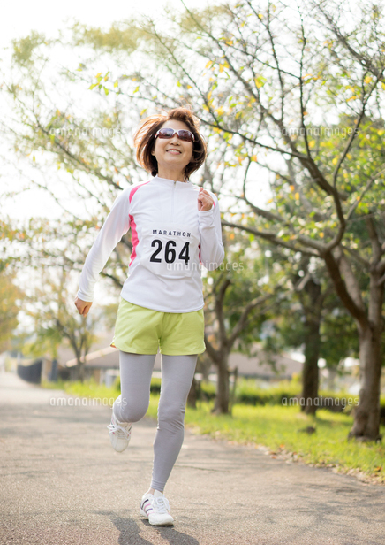
- 今年は初めてフルに挑戦！
完走目指して、日々トレーニング中です。
えっちゃんさん
-
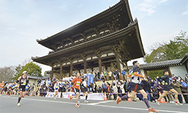
コース紹介
山紫水明の自然を感じながら、世界文化遺産などを巡り、国際文化観光都市・京都の魅力を満喫できるコースです。
-
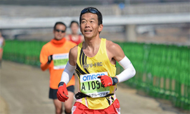
攻略アドバイス
ランニングアドバイザーの松井祥文コーチによる攻略アドバイスをお届けしています。
松井コーチの全5回にわたるアドバイスを参考に、しっかりと準備をして大会に臨みましょう。 -
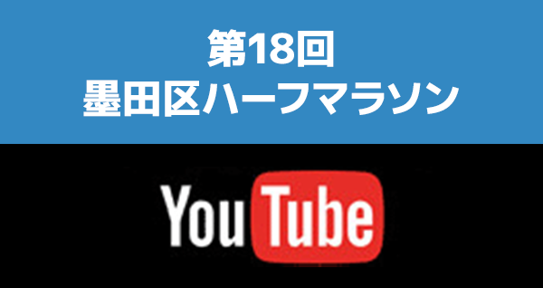
動画コンテンツ
第18回大会当日の動画をご覧いただけます。
-
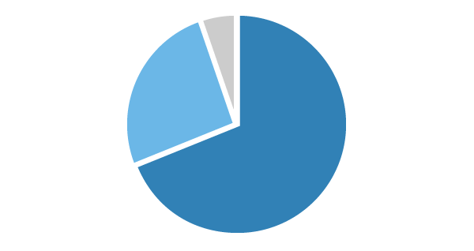
第18回大会アンケート集計結果
大会終了後の2014年2月16日～3月31日に墨田区ハーフマラソンホームページ上で、アンケートを行いました。
ご協力いただいた皆様からのアンケート集計結果を掲載いたします。 -
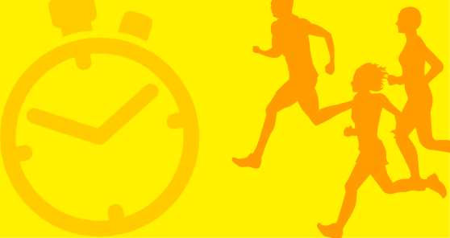
第18回大会完走者リスト
第18回大会の完走者の一覧です。
コース別、年代別に順位とタイムをご確認いただけます。 -
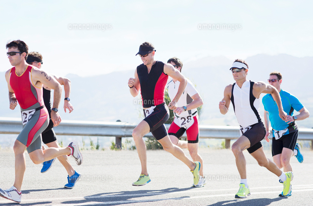
大会当日の写真を販売
大会当日にはコース各地に撮影ポイントを設置いたします。撮影された写真はインターネットで販売いたします。
写真のサイズも通常写真サイズから、大型パネルサイズまで各種選べます。